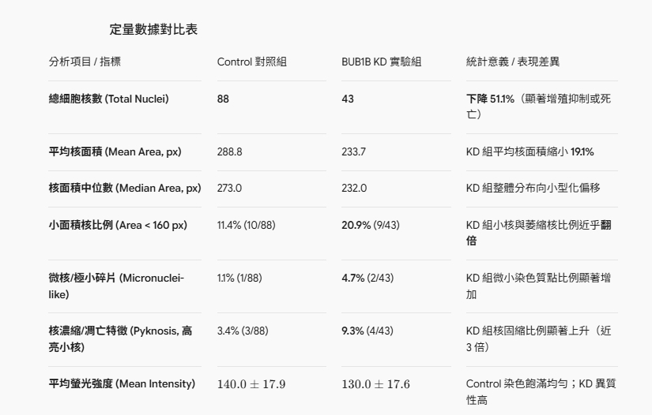
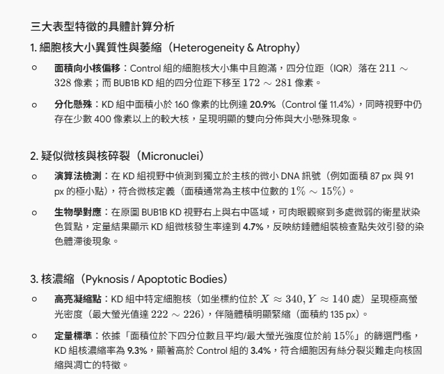

The fold did not come back. We still have a screen: reverse the BUB1B-knockdown nucleus with FDA drugs.
A faculty–student team at Taipei Medical University asked whether a small molecule could rescue BubR1 p.Asn1002Lys. DynamicBind on an FDA library never pulled residues 1002–1012 toward wild type. We then docked 2,427,793 blood–brain-barrier-filtered ligands on the new lysine, and we built a HeLa BUB1B shRNA imaging assay. If this entry is awarded, the prize funds a phenotype-first FDA screen with the Academia Sinica HTS core — hits are defined by nuclear rescue, not by binding BubR1.
Who we are
Taipei Medical University — College of Interdisciplinary Studies and College of Pharmacy. Faculty and students working as one Track 2 team.
Code: github.com/hunglinchen2003/BUB1B-N1002K-screening
This site: hunglinchen2003.github.io/bub1b-n1002k
What we actually did, in order
Mechanism
BubR1 is a spindle-assembly checkpoint protein. With Mad2, Bub3 and Cdc20 it forms the mitotic checkpoint complex and holds APC/C. This child is compound-heterozygous: a truncating allele (copy loss) plus p.N1002K at the N-cap of helix αG in the kinase C-lobe — ten residues from the known MVA hotspot L1012P.
AlphaFold kinase overlay
Kinase-only models, UniProt 700–1050. Drag to rotate. Teal = wild type. Brick = N1002K. The stick at the C-lobe is residue 1002.
Aligned on 956–995
| Residue | Cα shift (Å) | pLDDT WT / MUT |
|---|---|---|
| K995 | 2.44 | 96 / 96 |
| N/K1002 | 4.07 | 96 / 92 |
| T1008 | 5.01 | 98 / 97 |
| L1012 | 4.39 | 99 / 99 |
| K795 (ATP) | 1.03 | 94 / 94 |
What that means
The kinase core is not exploded. αG is displaced enough that a ligand sitting on NZ is a different pose than a ligand sitting on wild-type Asn. Full-length AF3 Cα RMSD of 33.5 Å is dominated by low-pLDDT IDRs and should not be read as a crystal-quality conformational change.
Stage A — FDA library: structure reversal failed
Library: MedChemExpress HY-L066 (FDA-approved and pharmacopeial). DynamicBind job of 3,619 compounds on mutant vs wild-type kinase. Apo mutant vs WT similarity baseline: 49.9 / 100.
A CPU Vina pass on the same box (22 Å, center on mutant NZ) scored 2,432 unique ligands. Pocket occupancy plus mutant-vs-WT gap put aprepitant first (−7.66 vs −5.73, 3.03 Å). That ranking did not survive the next gate.
Stage A — same poses, now as a lysine cover
After fold rescue failed, we re-scored existing mutant / wild-type Vina poses: acceptor ≤ 3.4 Å from NZ; carboxylate / sulfonate ≤ 4.0 Å; mutant-specific versus Asn ND2.
| # | Compound | Role | MUT Vina | Contact |
|---|---|---|---|---|
| 1 | Bicalutamide | approved anti-androgen | −6.36 | sulfonate 3.03 Å, geometric H-bond, mutant-selective |
| 2 | Hederagenin | pharmacopeial triterpene | −6.75 | carboxylate 2.94 Å |
| 3 | Glimepiride | approved sulfonylurea | −6.76 | sulfonate 3.15 Å; largest WT selectivity among AI seeds |
| 4 | Infigratinib | approved FGFR inhibitor | −6.79 | geometric H-bond 3.17 Å, selectivity +1.30 |
| 5 | Cynarin | artichoke polyphenol | −6.56 | carboxylate 3.09 Å |
Stage B — 2.43 million CNS ligands on K1002
In-house catalog (ChEMBL + ZINC), Wager CNS subset (bbb_cns: MW ≤ 450, TPSA ≤ 90, HBD ≤ 3, 1 ≤ clogP ≤ 3.5). Uni-Dock 1.2, Vina scoring, GPU, 22 Å cube on mutant K1002 NZ. Rank: mutant Vina, NZ distance, H-bond / ion flags, then WT selectivity.
cursor.json n_ok).| Rank | ID | Class | MUT | WT | Sel. | NZ Å |
|---|---|---|---|---|---|---|
| 1 | CHEMBL1445111 | quinazoline-dione–piperazine | −8.64 | −5.75 | +2.90 | 2.96 |
| 2 | CHEMBL229651 | fused indole–DKP | −8.09 | −6.29 | +1.80 | 3.30 |
| 3 | CHEMBL5816698 | quinazolinone–piperazine | −7.96 | −6.11 | +1.85 | 3.22 |
| 4 | CHEMBL4633401 | benzofuran–barbiturate-like | −7.95 | −6.02 | +1.93 | 3.39 |
| 5 | CHEMBL1255082 | naphthamide–spiro imidazolidinone | −7.85 | −6.06 | +1.79 | 2.98 |
| 6 | CHEMBL3781825 | bis-tetrahydro-β-carboline DKP | −7.83 | −6.35 | +1.48 | 3.04 |
| 7 | CHEMBL1365318 | quinazoline-dione–piperazine | −7.81 | −5.94 | +1.87 | 3.04 |
| 8 | CHEMBL1537224 | anthracene–succinimide | −7.75 | −6.31 | +1.44 | 3.00 |
| 9 | CHEMBL6015444 | spiro-phthalide oxazolinone | −7.74 | −6.69 | +1.05 | 3.05 |
| 10 | CHEMBL2042022 · notoamide B | Aspergillus prenylated indole | −7.74 | −7.23 | +0.51 | 3.16 |
torch_cluster DLL). These ten ranks are Vina + NZ geometry, not induced-fit confirmation. They are a docking hypothesis, not the prize library.BUB1B knockdown: the imaging assay
HeLa, pLKO.1-puro shRNA, Hoechst 33342, 40×. 14 October 2026. This is a loss-of-function phenocopy of SAC failure — not an N1002K patient line.

| Metric | Control | BUB1B KD | Change |
|---|---|---|---|
| Nuclei counted | 88 | 43 | −51% |
| Mean nuclear area (px) | 288.8 | 233.7 | −19% |
| Median area (px) | 273.0 | 232.0 | shift to smaller nuclei |
| Area < 160 px | 11.4% (10/88) | 20.9% (9/43) | ~2× |
| Micronucleus-like | 1.1% (1/88) | 4.7% (2/43) | ~4× |
| Pyknosis (bright small nuclei) | 3.4% (3/88) | 9.3% (4/43) | ~3× |
| Mean intensity | 140.0 ± 17.9 | 130.0 ± 17.6 | KD more heterogeneous |


If we win: Academia Sinica HTS, FDA drugs, phenotype reversal
Docking will not treat MVA. The bottleneck is a wet-lab screen on a library that can actually be given to a child.
- Transfer the KD nuclear assay to the Academia Sinica HTS core; lock plate QC (Z′, DMSO).
- Screen an FDA-approved collection for reversal of KD nuclear morphology.
- Confirm actives in dose–response on the same imaging metrics. Mechanism (BubR1 vs bypass) is secondary.
Limits
- AlphaFold kinase fragments, not a crystal structure of full-length BubR1.
- Vina / Uni-Dock scores are not Kd.
- Stage B top 10 are not DynamicBind-validated.
- Most Stage B IDs are not approved drugs. Track 2’s approved-drug request is carried by Stage A plus the planned HTS library.
- Whether 1002K is a real ubiquitin acceptor was not measured.
- KD is HeLa wild-type knockdown, not patient cells and not an N1002K knock-in.
- No human dosing, no pediatric PK, no claim of efficacy.
Selected references
- Suijkerbuijk et al. Cancer Res 2010 — MVA kinase-domain missense → instability, HSP90, proteasome.
- Suijkerbuijk et al. Dev Cell 2012 — BubR1 as an unusual pseudokinase; KARD recruits PP2A-B56.
- Bolanos-Garcia & Blundell. FEBS J 2011 — L1012 on αG.
- Ding et al. JACS 2010 — stephacidin / notoamide anticancer alkaloids.
- ChEMBL 34, CHEMBL2042022 (notoamide B).
- Wager et al. — CNS multiparameter filters used for
bbb_cns.